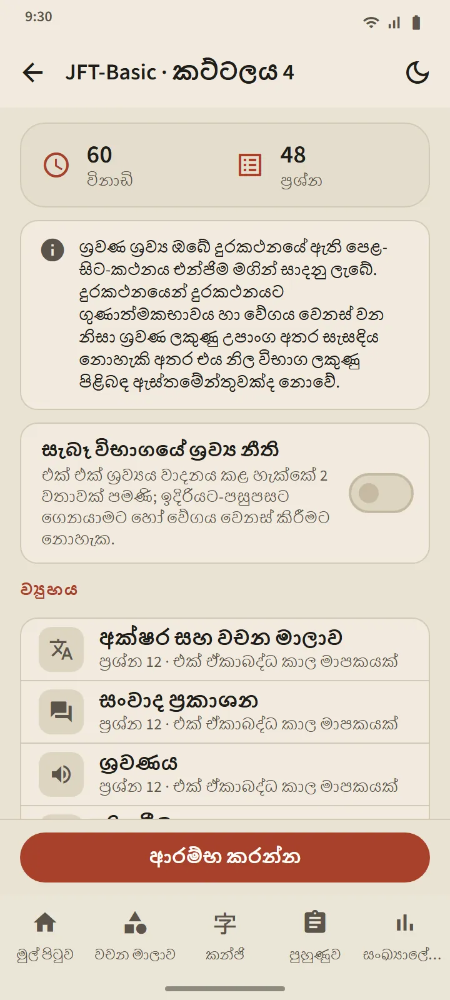
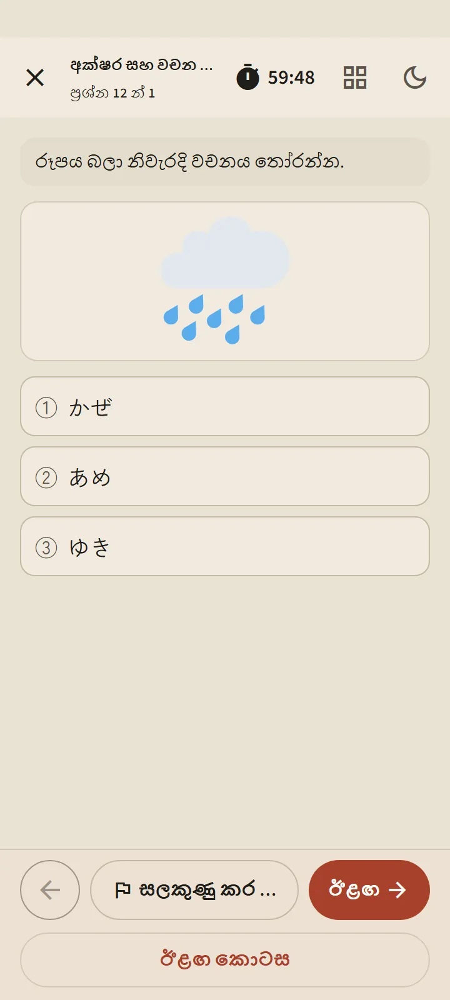
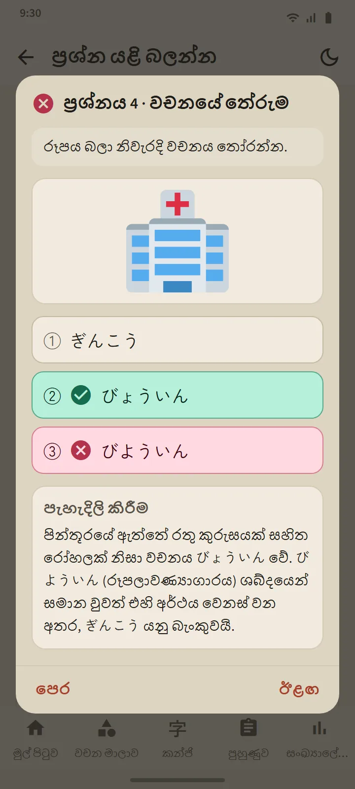

මට්ටම් හයක්, කට්ටල 24ක්
පුහුණුව පටිත්තේ ඇති සෑම මට්ටම් කාඩ්පතක්ම මට්ටම් පිටුව විවෘත කරයි: ආරම්භ කරන්න බොත්තමක්, අංක යෙදූ කට්ටල කොටු සහ ඉතිහාසය. සියලු කට්ටල නිම කළ පසු, ඔබ කවදාවත් නොදුටු ප්රශ්න මුලින්ම තබමින් මිශ්ර පුහුණුව විවෘත වේ. නව කට්ටල යෙදුම් යාවත්කාලීන හරහා පැමිණේ.
| විභාගය | කට්ටල | කට්ටලයකට ප්රශ්න | කාලය |
|---|---|---|---|
| JFT-Basic | 8 | 48 | 60 විනාඩි |
| JLPT N5 | 8 | 68 | 90 විනාඩි |
| JLPT N4 | 2 | 85 | 115 විනාඩි |
| JLPT N3 | 2 | 102 | 140 විනාඩි |
| JLPT N2 | 2 | 107 | 155 විනාඩි |
| JLPT N1 | 2 | 101 | 165 විනාඩි |


ප්රශ්න ස්වරූපය සැබෑ විභාගවලට අනුව
JFT-Basic ප්රශ්නවල පිළිතුරු තෝරාගැනීම් තුනක් ඇත (ව්යාකරණවල හතරක්), සිදුවීම් සහ ඇඟවීම් ඉගෙන ගන්නාගේ භාෂාවෙන් ඇත, නිල නිදර්ශන ප්රශ්නවල මෙන් බොහෝ ප්රශ්නවල පින්තූරයක් ඇත. JLPT ප්රශ්නවල පිළිතුරු තෝරාගැනීම් හතරක්, මට්ටමට ගැළපෙන ෆුරිගානා, සහ කෙටි කතා, සටහන්, නිවේදන, පණිවිඩ, ඊමේල් සහ තොරතුරු වගු වැනි විවිධ ස්වරූපවලින් කියවීමේ පාඨ ඇත. සෑම කට්ටලයක්ම නිකුත් කිරීමට පෙර පරීක්ෂා කර ඇති අතර නිල ප්රශ්න කිසිවක් පිටපත් කර නැත.
ඔබ ආරම්භ කිරීමට පෙර, දැනුම්දීමේ තිරය එම කට්ටලයේ ව්යුහය පෙන්වයි: කොටස්, ප්රශ්න ගණන් සහ කාලය. කාලය සැබෑ විභාගවලට අනුව ය: JFT-Basic හි එක් ඒකාබද්ධ කාලයක්, JLPT හි කොටසකට කාලයක්. ඔබ ඉදිරියට ගිය පසු, විභාග ශාලාවේ මෙන්ම, පෙර කොටස වැසේ. සැක සහිත ප්රශ්න සලකුණු කළ හැක, තාවකාලිකව ඉවත් විය හැක (ඔරලෝසුව දිගටම ධාවනය වේ), සහ පුහුණුව පටිත්තෙන් නැවත ආරම්භ කළ හැක.


ඔබේ දුරකථනයේ ජපන් හඬින් ශ්රවණය
ශ්රවණ පිටපත් ඔබේ දුරකථනයේ ජපන් පෙළ-සිට-කථනය (text-to-speech) එන්ජිමෙන් කියවන අතර, සෑම කථිකයෙකුටම වෙනස් හඬක් ඇත. සැබෑ විභාගයේ මෙන් පිළිතුරු තෝරාගැනීම් මුද්රණය නොකර ඇසෙන්නේ පමණි; JFT-Basic සහ N5 පින්තූර තෝරාගැනීම් භාවිත කරයි. “සැබෑ විභාගයේ ශ්රව්ය නීති” ස්විචය වාදනය සැබෑ විභාගයේ ඉඩ දෙන දේට සීමා කරයි: JFT-Basic හි දෙවරක්, JLPT හි එක් වරක්.
හඬ එන්නේ එක් එක් දුරකථනයෙන් නිසා, උපාංග අතර ගුණාත්මකභාවය වෙනස් වේ; දුරකථනයක ජපන් හඬක් තවම නොමැති නම්, යෙදුම එය ස්ථාපනය කරන ආකාරය පෙන්වන අතර එය ලැබෙන තෙක් ශ්රවණ කොටස මඟ හරිනු ලැබේ.

නිල පරිමාණවලින් ප්රතිඵල, ඉන්පසු සෑම ප්රශ්නයක්ම පැහැදිලි කර
JFT-Basic ප්රතිඵල 10–250 රේඛාවේ 145, 175 සහ 200 හි සලකුණු සහ ඒවායේ පරාස නාම වන A1, A2.1 සහ A2.2 සමඟ ඇඳේ, එමෙන්ම සැබෑ විභාගයේ සෑම පරාසයක්ම භාවිත වන්නේ කුමක් සඳහාද යන්නත් පෙන්වයි. JLPT ප්රතිඵල ලකුණු දෙන සෑම කොටසක්ම එහි අවමයට සාපේක්ෂව පෙන්වයි, මන්ද සැබෑ විභාගයේ කොටසක් අවමයට වඩා පහළ නම් අසමත් වීමකි. දෙකටම කොටසකට සහ ප්රශ්න වර්ගයකට නිවැරදි ප්රතිශතය ඇත.
ප්රශ්න යළි බලන්න බොත්තම සෑම ප්රශ්නයක්ම ඔබේ පිළිතුර, නිවැරදි පිළිතුර සහ පැහැදිලි කිරීමක් සමඟ විවෘත කරයි; ශ්රවණ ප්රශ්න ඒවායේ පිටපතද පෙන්වයි. පැහැදිලි කිරීම් භාෂා 12කින් ඇත. සෑම මට්ටමක ඉතිහාසයම ඔබේ නවතම පුහුණු කිරීම් තබා ගන්නා අතර, ලකුණු ප්රස්තාරය සංඛ්යාලේඛන පටිත්තේ ඇත.
මෙම ලකුණු ප්රගතිය බැලීමට ඇස්තමේන්තුවක් මිස ඔබේ නිල ප්රතිඵලය පිළිබඳ අනාවැකියක් නොවේ.
රටාවට පාඩමක් ඇති ව්යාකරණ ප්රශ්න "මෙම රටාව ඉගෙන ගන්න" මඟින් එම පාඩමට කෙලින්ම සබැඳේ.


නොමිලේ සහ Premium
සෑම කට්ටලයක්ම නොමිලේ අනුවාදයේ විවෘතයි. ඔබ ආරම්භ කරන්න එබූ පසු, එම මට්ටමේ ඊළඟ පුහුණුව දින 7ක් අගුළු දමයි; අනෙක් මට්ටම් විවෘතව පවතින අතර, ඉතිහාසය සහ පැහැදිලි කිරීම් කිසි විටෙකත් අගුළු නොදමයි. අගුළු දමා ඇති අතරතුර, දැන්වීමක් නැරඹීමෙන් අමතර පුහුණුවක් අගුළු හැරිය හැක. Premium හි විරාමයක් නැත. දැන්වීම් කිසිවෙකුටත් ප්රශ්න තිරවල කිසි විටෙකත් නොපෙනේ.